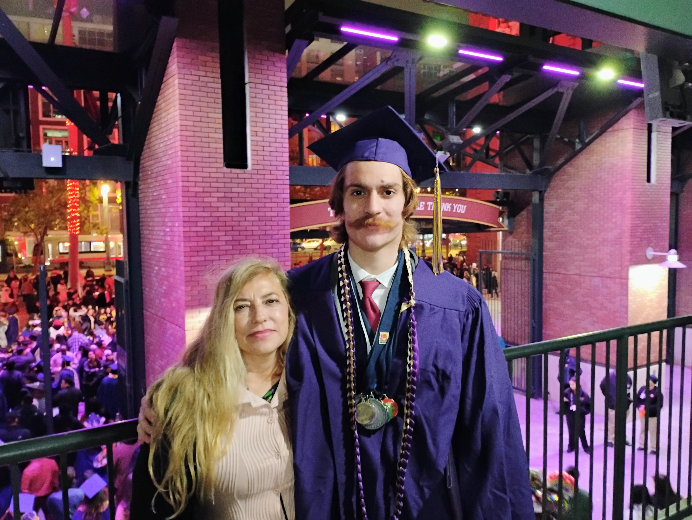

Tristen Johnny Gann
Mathematics Masters student, Graduate Teaching Associate, Graduate Research Assistant
San Francisco State University
Analysis, Fractal Uncertainty Principles
tgann at mail.sfsu.edu
“Our Souls whose faculties can comprehend
— Christopher Marlowe
The wonderous Architecture of the world:
And measure every wand'ring planet's course,
Still climbing after knowledge infinite.”
About
Researching Fractal Uncertainty Principles under Dr. Chun-Kit Lai